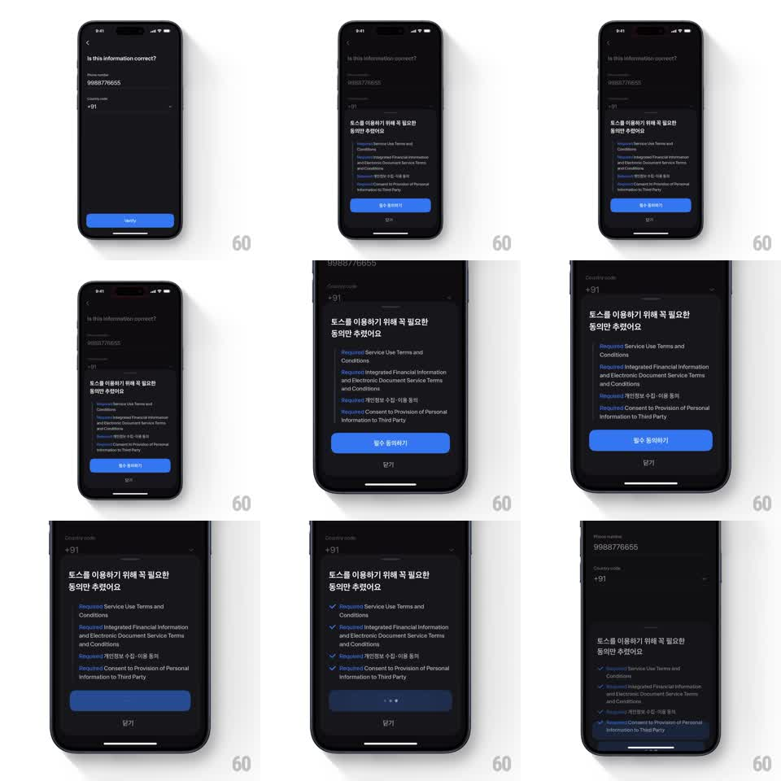

Media
Frame-by-frame

Rebuild this interaction 1:1: Toss's accept-terms flow - tapping agree turns each "[Required]" label into a blue checkmark cascading down the list before the sheet slides away.

Rebuild this interaction 1:1: Toss's accept-terms flow - tapping agree turns each "[Required]" label into a blue checkmark cascading down the list before the sheet slides away.
## Integration
Integration: stack-agnostic spec - springs given as stiffness/damping, timed motions as duration + curve; map every value to your framework and animation library of choice.
## Scene
Dark confirm screen ("Is this information correct?", phone number, country code, Verify button). A terms bottom sheet rises: Korean heading ("토스를 이용하기 위해 꼭 필요한 동의만 추렸어요"), a list of terms each prefixed with a blue "[Required]" tag (Service Use Terms and Conditions, Integrated Financial Information and Electronic Document Service Terms, 개인정보 수집·이용 동의, Consent to Provision of Personal Information to Third Party), a blue agree button, and a close option.
## Motion spec
Pattern: cascading label-to-checkmark morph with sheet dismissal.
- The sheet rises with a spring (~320/28) over a 50% dim.
- Tapping the agree button: the button shows a three-dot loading pulse (dots fade in sequence, 300ms loop).
- Then each "[Required]" tag morphs into a filled blue checkmark in top-to-bottom order: the tag text collapses (width -> 0, 150ms) as the check pops in (scale 0.5 -> 1.15 -> 1, spring ~380/16), cascading at 120ms intervals.
- After the last check lands (250ms), the sheet slides down and out (400ms, ease-in) and the dim lifts (300ms), returning to the confirm screen.
## Calibration
- The cascade is the confirmation: even though one tap agreed to all, each item visibly acknowledges.
- The morph happens in place - the checkmark occupies exactly where the tag sat.
## Reduced motion
All tags swap to checks simultaneously (200ms fade); sheet dismisses without cascade delay.
## Don't miss
- The tag's blue and the checkmark's blue match exactly - it reads as a transformation, not a replacement.
- The sheet's rounded top corners and grabber persist through dismissal.